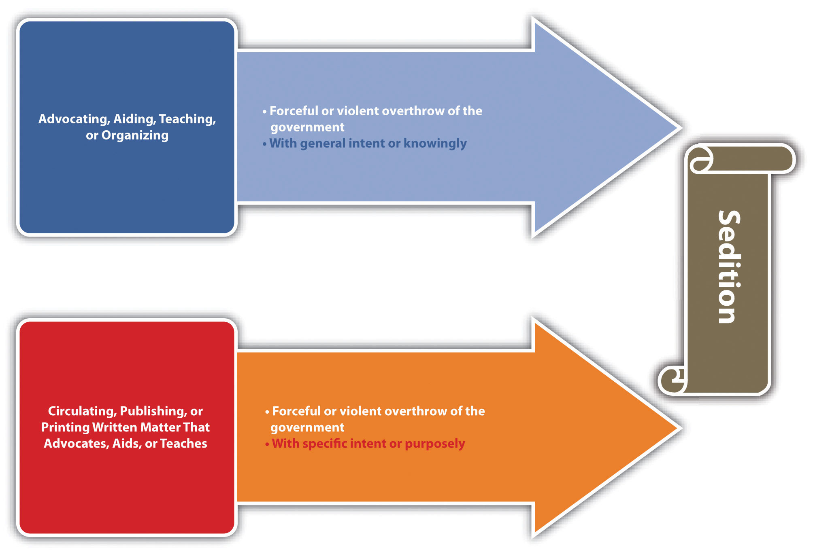
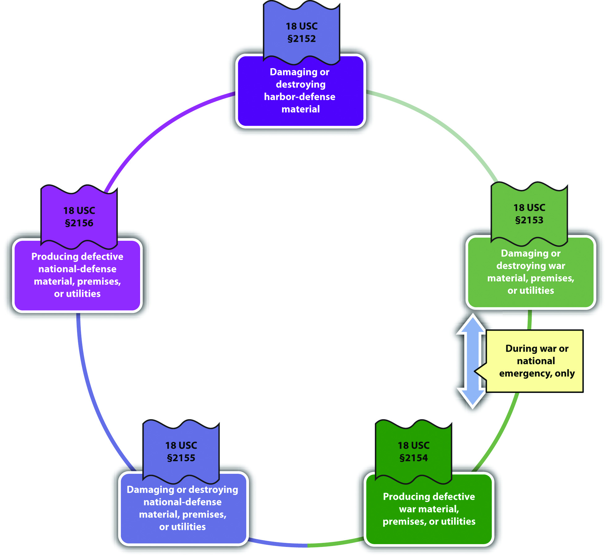

The government is tasked with keeping the nation safe from domestic and international attacks on the government and citizens. National security is an issue that affects the entire country, so most of the regulation in this area is federal, rather than state.Pennsylvania v. Nelson, accessed May 1, 2011, 350 U.S. 497 (1956), http://supreme.justia.com/us/350/497/case.html. Criminal statutes protecting the government can encroach on the individual freedom to protest government action and can also affect privacy interests, which subjects them to enhanced constitutional scrutiny similar to the crimes against the public reviewed in Chapter 12 "Crimes against the Public". This section explores crimes against the nation, such as treason, sedition, sabotage, and espionage. Section 13.2 "Crimes Involving Terrorism" examines terrorism and the USA PATRIOT Act. The last section of this chapter discusses other crimes against the government that are primarily state regulated, such as perjury, bribery, and obstruction of justice.
Article III § 3 of the US Constitution defines treasonLevying war against the United States or adhering to the enemy by providing the enemy with aid and comfort. and specifies the evidentiary requirements for any treason trial. The founding fathers wanted to ensure that the government would not charge an individual with treason without significant and reliable proof. Treason was punishable by death in England, so it was a constant threat to anyone who disagreed with the ruling party. Although the treason clause in the Constitution is modeled after the early English law defining treason, it omits a section that criminalized “imagining the death of the King” and also limits Congress’s authority to extend or expand the crime of treason or to lighten the evidentiary requirements.
The pertinent section of the Constitution states, “Treason against the United States shall consist only in levying War against them, or, in adhering to their Enemies, giving them Aid and Comfort. No Person shall be convicted of Treason unless on the Testimony of two Witnesses to the same overt Act, or on Confession in open Court.”
The criminal act element required for treason is levying war against the United States or adhering to the enemy by giving aid and comfort.18 U.S.C. § 2381, accessed April 29, 2011, http://www.law.cornell.edu/uscode/718/usc_sec_18_00002381----000-.html. Prosecutions for treason are practically nonexistent, so case law in this area is dated, yet still constitutes viable precedent. In U.S. v. Burr, 25 F Cas 55 (1807), a case involving then-vice president Aaron Burr’s prosecution for treason, the US Supreme Court held that levying war means an actual assembling of men, not a conspiracy to levy war, nor a mere enlistment of men. In Haupt v. U.S., 330 U.S. 631 (1947), the US Supreme Court held that the defendant’s acts of harboring and sheltering his son in his home, helping him to purchase an automobile, and obtain employment constituted providing aid and comfort to the enemy because the defendant’s son was a spy and saboteur. The criminal intent element required for treason is most likely the general intent or knowingly to commit an act of levying war or the specific intent or purposely to betray the United States by giving aid and comfort to enemies.Cramer v. U.S., 325 U.S. 1 (1945), http://supreme.justia.com/us/325/1. The Constitution specifies the evidentiary requirements that two witnesses testify to an overt act of treason or that the defendant confess in open court, although this is not set forth in the federal treason statute.18 U.S.C. § 2381, accessed April 29, 2011, http://www.law.cornell.edu/uscode/718/usc_sec_18_00002381----000-.html. As stated in Cramer v. U.S., 325 U.S. 1, 34, 35 (1945), “Every act, movement, deed, and word of the defendant charged to constitute treason must be supported by the testimony of two witnesses,” and it is not enough that the elements of treason can be inferred from the witness statements. Treason is graded as a felony that can merit the death penalty or prohibit the defendant from ever holding federal office.18 U.S.C. § 2381, accessed April 29, 2011, http://www.law.cornell.edu/uscode/718/usc_sec_18_00002381----000-.html.
Benedict is identified as a person of interest in a treason case. A government agent posing as an enemy spy invites Benedict to dinner, and they discuss the decline of the United States and whether or not they should “do something about it.” At the conclusion of the dinner, Benedict picks up the tab. Thereafter, Benedict is arrested for treason and refuses to incriminate himself by responding to law enforcement interrogation. It is unlikely that Benedict will be convicted of treason in this case. Benedict paid for the government agent’s dinner, which could constitute providing aid to the enemy. However, Benedict indicated a hesitancy to take further action, which does not satisfy the requirement that he act with the specific intent or purposely to betray the United States. In addition, only the government agent can testify as to Benedict’s act of paying for a meal because Benedict is asserting his right to remain silent. Therefore, the constitutional requirement that two witnesses testify about the overt act charged as treason is not satisfied. The intent element and evidentiary requirement for treason are lacking, so Benedict probably will not be subject to prosecution for and conviction of this offense.
Figure 13.1 Crack the Code

SeditionIncitement of insurrection or revolution by force or violence. criminalizes the incitement of insurrection or revolution by seditious speech or writings and, as such, is subject to the restrictions set forth in the First Amendment. The first federal law prohibiting sedition was the Sedition Act enacted in 1798 and repealed by Thomas Jefferson after his election as president. The current federal statute criminalizing sedition was originally enacted in 1940 and is codified at 18 U.S.C. § 2385. Conspiracy to commit sedition is codified at 18 U.S.C. § 2384. Many states have similar provisions.51 Pa. Cons. Stat. Ann. § 6018, accessed April 30, 2011, http://law.onecle.com/pennsylvania/military-affairs/00.060.018.000.html. Like treason, sedition is rarely prosecuted.
The criminal act element required for sedition is either advocating, aiding, teaching, organizing or printing, publishing, or circulating written matter that advocates, aids, or teaches the overthrow of the US government or any state, district, or territory thereof by force or violence.18 U.S.C. § 2385, accessed April 30, 2011, http://www.law.cornell.edu/uscode/718/usc_sec_18_00002385----000-.html. The criminal intent element required for sedition is the general intent or knowingly to advocate, aid, teach, or organize, or the specific intent or purposely to print, publish, or circulate written matter that advocates, aids, or teaches the violent government overthrow.18 U.S.C. § 2385, accessed April 30, 2011, http://www.law.cornell.edu/uscode/718/usc_sec_18_00002385----000-.html. In Yates v. U.S., 354 U.S. 298 (1957), the US Supreme Court held that only advocacy directed at promoting unlawful action could be constitutionally prohibited. Advocacy of an “abstract doctrine” was protected by the First Amendment as free speech.Yates v. U.S., 354 U.S. 298, 318 (1957), accessed April 30, 2011, http://scholar.google.com/scholar_case?case=14369441513839511604&q= Yates+v.+U.S.&hl=en&as_sdt=2,5. Sedition is graded as a felony that can prohibit the defendant from obtaining employment with the US government for a minimum of five years postconviction.18 U.S.C. § 2385, accessed April 30, 2011, http://www.law.cornell.edu/uscode/718/usc_sec_18_00002385----000-.html.
Mo, a disgruntled immigrant who has been denied citizenship, decides he wants to overthrow the US government and supplant it with a new government that will grant the citizenship privileges he desires. Mo prints up leaflets advocating the overthrow of the government by placing a series of bombs in strategic and specifically named places and passes them out every Saturday in front of varied places known for ethnic diversity throughout the city. Mo has most likely committed sedition in this example. Mo printed written matter advocating the overthrow of the US government by unlawful action, using force and violence. Mo’s intent was to get rid of the current government so that he could gain citizenship, which is specific intent or purposely. Thus Mo’s conduct probably constitutes sedition, and he may be subject to prosecution for and conviction of several counts of this offense.
Figure 13.2 Diagram of Sedition
SabotageDestroying or damaging property or producing defective property that impedes the US national defense or ability to participate in or prepare for war. is criminalized at 18 U.S.C. § 2151 et seq., which includes several different forms of this offense. Many states have similar provisions.RCW § 9.05.060, accessed May 1, 2011, http://apps.leg.wa.gov/rcw/default.aspx?cite=9.05.060. In general, sabotage is destroying, damaging, or defectively producing (criminal act and harm) property with the specific intent or purposely, general intent or knowingly, or negligently to impede the nation’s ability to prepare for or participate in war and national defense and is detailed in the following United States Codes:
Both 18 U.S.C. §§ 2153 and 2154 have the attendant circumstance that the conduct occur during war or a national emergency. All the sabotage statutes grade sabotage as a felony, with sentences ranging from five to thirty years’ incarceration in federal prison.
Sabotage is prosecuted more often than treason and sedition, and there have been some extremely interesting criminal sabotage cases, including sabotage indictments against a corporation manufacturing defective raincoats for the armed forces during wartime, a sabotage trial for the burning of an ROTC building on the Washington University campus after the Kent State University riots, a sabotage trial for defendants who stole copper wire from a railroad track that was used to ship war materials, and the sabotage indictment of Osama bin Laden for extraterritorialOutside the United States. (outside the United States) activity.
Review the example in Section 13 "Example of Sedition" with Mo. Add to this example and imagine that Mo gets no response to his fliers and becomes enraged. He decides to get back at the United States for not allowing him to become a US citizen by harming its national security and exposing it to attack by enemy forces. He thereafter hacks into the computer system used by the US Department of Defense and damages it so that it is out of commission for two weeks. Mo has most likely committed the federal crime of sabotage. Mo damaged national defense material with the specific intent or purposely to interfere with the nation’s security and defense, which is prohibited under 18 U.S.C. § 2155, whether or not it is wartime or during a national emergency. Thus Mo may be subject to prosecution for and conviction of this offense and could face many years of incarceration for his conduct.
Figure 13.3 Diagram of Sabotage
EspionageSpying on the US government during peace or wartime., also known as “spying,” is criminalized at 18 U.S.C. § 792 et seq. Originally part of one of the early versions of the Sedition Act of 1918, the crime of espionage has a colorful history and many interesting criminal prosecutions similar to criminal sabotage. Federal espionage statutes criminalize various acts, depending on whether the conduct occurs during peace or during war. During times of peace, it is criminal espionage to gather, transmit, or attempt to gather or transmit defense information (criminal act) with general intent or knowingly, or with the specific intent or purposely that it will be used to damage the United States or assist any foreign nation.18 U.S.C. § 793, accessed May 1, 2011, http://www.law.cornell.edu/uscode/718/usc_sec_18_00000793----000-.html. During times of war, it is criminal espionage to collect, record, publish, or communicate information about military activities or to attempt any of the foregoing (criminal act) with the specific intent or purposely that the information will be transmitted to the enemy.18 U.S.C. § 794(b), accessed May 1, 2011, http://www.law.cornell.edu/uscode/718/usc_sec_18_00000794----000-.html. Espionage is graded as a felony, with potential sentencing of life in prison or the death penalty.18 U.S.C. § 792 et seq., accessed May 1, 2011, http://www.law.cornell.edu/uscode/718/usc_sup_01_18_10_I_20_37.html.
Some interesting criminal espionage cases are the Rosenberg case, where a married couple conspired to pass nuclear secrets to the Soviets and were later executed pursuant to the death penalty, the Hanssen case, where an FBI agent sold state secrets to Moscow for $1.4 million in cash and diamonds, and the Aragoncillo case, where a White House employee stole intelligence documents from White House computers and e-mailed them to the Philippines.
Review the example given in Section 13 "Example of Sabotage" with Mo and his computer hacking. Change the example so that before Mo damages the US Department of Defense computer system, he copies some information from different top-secret sites and sends them to operatives in an enemy nation with this message: “I have stolen this information directly from the US Department of Defense. I have also disabled their computer system, which will probably take some time to repair. Now is an excellent time to attack the United States.” He thereafter severely damages the computer system. In this example, Mo has most likely committed both sabotage and espionage. As stated in Section 13 "Example of Sabotage", Mo probably committed sabotage when he damaged national defense material with the specific intent or purposely to interfere with the nation’s security and defense. When Mo copied top-secret information and sent it to an enemy nation, along with informing the nation that the US Department of Defense computer system was disabled, he gathered and transmitted information with the specific intent or purposely that it be used to injure the United States. Thus Mo has probably committed both sabotage and espionage and may be subject to prosecution for and conviction of these offenses.
President Obama on the Death of Osama bin Laden
President Obama’s speech explaining Osama bin Laden’s death is shown in this video:
(click to see video)Table 13.1 Comparing Treason, Sedition, Sabotage, and Espionage
| Crime | Criminal Act or Harm | Criminal Intent | Attendant Circumstance(s) |
|---|---|---|---|
| Treason* | Levy war, or give aid and comfort to enemies | Most likely, general intent or knowingly to levy war, specific intent or purposely to betray the United States with aid and comfort | |
| Sedition | Advocating or printing matter that advocates the forceful or violent overthrow of the US government | General intent or knowingly to advocate, specific intent or purposely when printing matter that advocates the forceful or violent overthrow of the US government | |
| Sabotage | Varies: either destroying, damaging, or producing defective property that impedes US defense capabilities | Varies: specific intent or purposely, general intent or knowingly or negligently | Certain conduct must take place during war or a national emergency |
| Espionage | Spying | Varies: either general intent or knowingly, or specific intent or purposely that information will be transmitted to the enemy | Certain conduct must take place during war |
| *Includes the evidentiary requirement of the testimony of two witnesses or the defendant’s confession in open court | |||
Answer the following questions. Check your answers using the answer key at the end of the chapter.